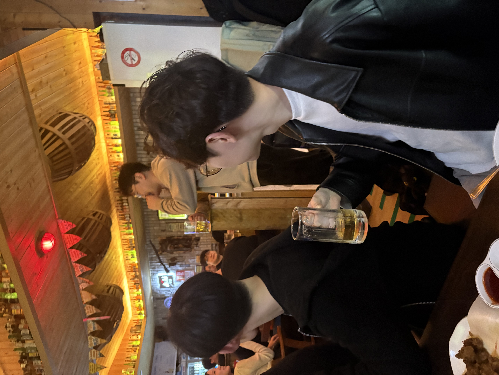

2026. 04. 09
2026 KAS Spring Meeting 분과모임
34명 참석2026 봄 한국천문학회 학술대회에서 KYAM 분과모임이 진행되었습니다. 총 34명의 젊은 천문학자들이 참석하여 25대 임원진 인사 및 활동 계획 공유, 회원 간 교류의 시간을 가졌습니다. 분과모임 이후 뒷풀이까지 성황리에 마무리되었습니다.
25대 KYAM의 행사 일정과 활동 기록

2026 봄 한국천문학회 학술대회에서 KYAM 분과모임이 진행되었습니다. 총 34명의 젊은 천문학자들이 참석하여 25대 임원진 인사 및 활동 계획 공유, 회원 간 교류의 시간을 가졌습니다. 분과모임 이후 뒷풀이까지 성황리에 마무리되었습니다.
2026 가을 한국천문학회 학술대회에서 KYAM 정기총회가 개최될 예정입니다. 하반기 활동 보고, 회원 교류, 차기 임원진 관련 논의 등이 진행됩니다. 일정이 확정되면 업데이트하겠습니다.